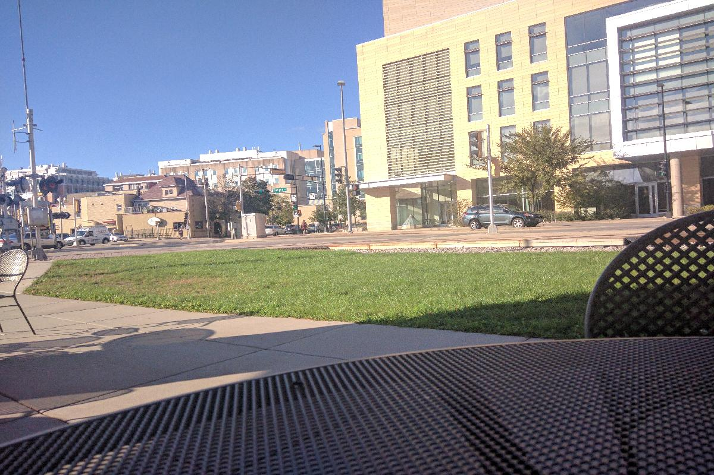
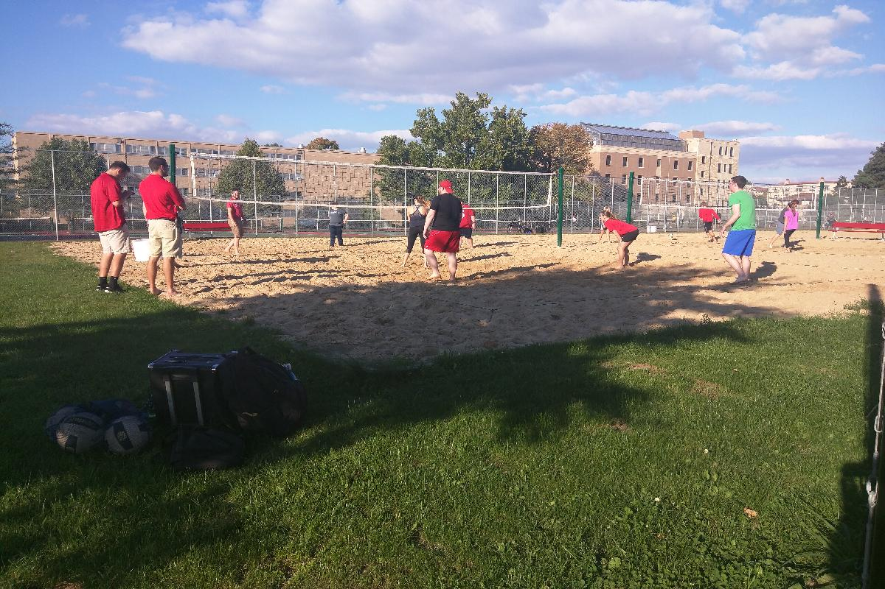
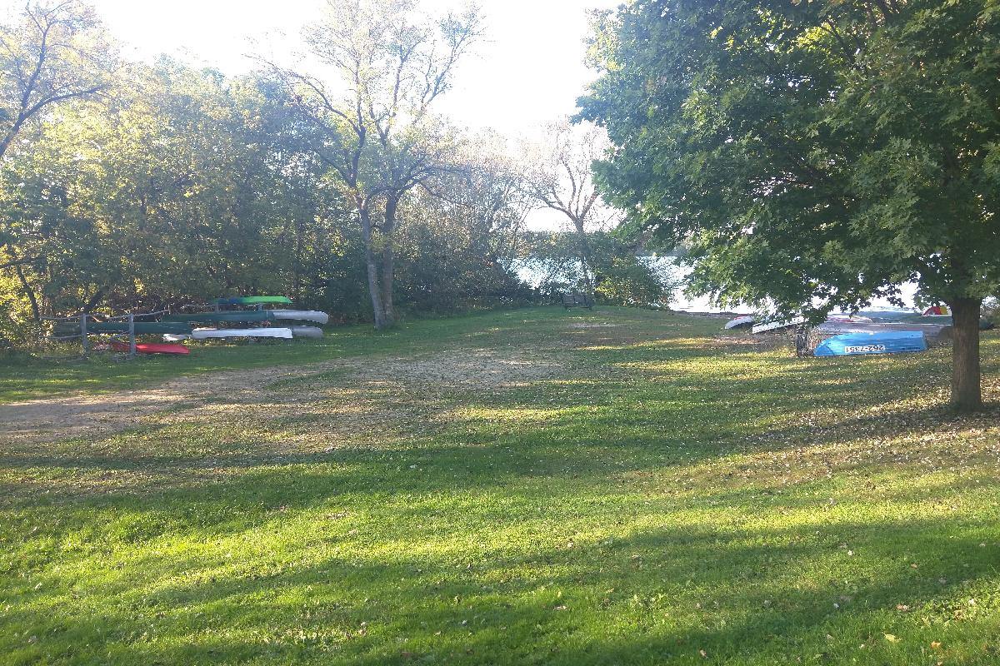

Day 7, Monday, Oct 03 2016
Mistake and Exploration 差错与探索
- 新的一周，第一个周一。今天经历挺丰富，完成了些任务，出了点乱子，也长了些经历。
- 新的一周，想一鼓作气解决两件重要的事情：去学院见老师的秘书，向芝加哥领事馆登记材料。
- 中午简单吃点，迎着明媚的阳光出发。按照事先计划好的行程，准备做80路去Discovery building，然后再去东边的邮局寄送材料。谁知第一站就偏离了轨道。刚到车站，迎面驶来一辆老旧巴士，并没有80路的标记。我虽有些犹豫，但看周围等车的人都以上车了，于是也上了巴士。坐在车上打量巴士的内部装潢，发下和80路公交完全不同，心想可能做错了。果然，这辆巴士一路没停，直接开刀了Copps超市门口，原来我是坐了copps的班车。好在之前来过Copps，知道具体位置，并不太慌张。不过只好将错就错，决定先去西边的邮局寄送材料
- 因为之前陪同学来过一次，轻车熟路，整个寄送的过程十分顺利。一看表已经快三点了，还约了与Ally见面，时间有点紧张了。因为还没有拿到公交卡，没法乘坐其他公交，又不甘心就此回去浪费一下午时间，想到之前听同学说这里Uber也挺方便的，于是决定试一把。事实证明选择是正确的。从下Uber软件，到打到车，到下车，整个过程十分顺利。最后是通过支付宝付款，花费大约$7左右，42人民币啊，的确很方便，也感叹互联网产业和经济全球化给我们生活啊带来真切的便利。
- 见了Ally，因为校园卡的流程出了些问题，很友好的陪我跑了一趟Union South。但事情进展的并不顺利，可能是注册的流程有误，Ally让我耐心回去等结果。一看表才下午四点多，于是沿着湖畔走回了宿舍，一路风景真的很漂亮，和国内全然不同的感觉，下午的郁闷也少了很多。
- 晚上参加了公寓Center的羽毛球活动，这么多年第一次打羽毛球，感觉身手还不错，同时认识了几个朋友，很很开心。
Snapshot

- 坐在South Union室外的凳子上，对面是我们的Discovery building。
- 坐Uber去South Union途中的街拍

- 四五点钟的太阳，一群学生在打沙排，天空中朵朵白云。
- Mendota湖中再进行着赛艇比赛。

- 湖边小道的边的一处小码头，草地上静静的躺着几艘小艇。
- 湖畔的水鸟。